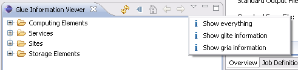

In order to add a new filter in the GLUE information view the extension point eu.geclipse.info.infoViewerFilter should be extended. Exemplary classes that extend this extension point are eu.geclipse.glite.ui.info.GLiteInfoViewFilter and eu.geclipse.gria.ui.info.GriaInfoViewFilter. These two classes filter GLUE information view in order to show only g-Lite or only GRIA resources respectively.
<extension point="eu.geclipse.info.infoViewerFilter"> <infoViewerFilter class="eu.geclipse.glite.info.ui.GLiteInfoViewFilter" id="eu.geclipse.glite.info.ui.GLiteInfoViewFilter"> </infoViewerFilter> </extension>
The existing filters are shown in the following image
